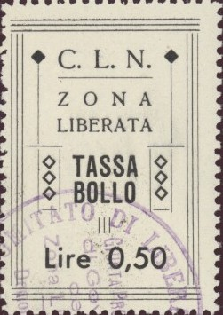
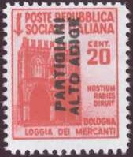
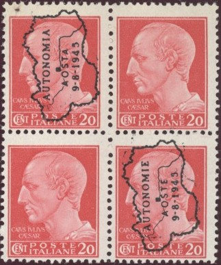
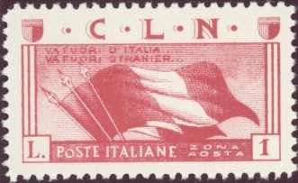
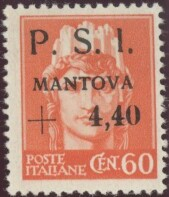
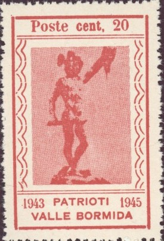

Return To Catalogue - Italy overview - Italy socialist republic
Note: on my website many of the
pictures can not be seen! They are of course present in the
catalogue;
contact me if you want to purchase the catalogue.
Many local overprints exist, they were probably mainly issued for stamp collectors. I'll list the stamps I've seen here.

'Lire 0,50' black 'Lire UNA' black
20 c red (Bologna Loggia dei Mercanti, second type, '20' upper right) 25 c green (Roma - S.Lorenzo, second type, '25' upper left) 25 c green (Roma - S.Lorenzo, first type, '25' bottom right) 1 L violet (Abbazia di Montecassino)
20 c red (Bologna Loggia dei Mercanti, first type, '20' bottom right) 1.25 L blue (Milano S.Maria Della Grazie, overprint red and vertical
25 c green (red overprint)
50 c violet (red overprint, overprint on two stamps) 1.25 L green (express stamp, red overprint)
2 L blue (red overprint)
Overprinted "PARTIGIANI ALTO ADIGE"

Overprinted vertically on Destroyed monument stamps 5 c olive (Ancona - S.Ciriaco) 10 c olive (Abbazia di Montecassino) 20 c red (Bologna Loggia dei Mercanti, second type, '20' upper right) 25 c green (Roma - S.Lorenzo, second type, '25' upper left) 75 c red (man with drum 'Tamburino') 1 L violet (design as 10 c) 3 L green (Milano S.Maria Della Grazie) Overprinted horizontally on Bandieri brothers set 25 c green 1 L violet 2.50 L red
Overprinted on 1944 express stamp 1.25 L green Overprinted on Bandieri brothers set 25 c green 1 L violet 2.50 L red
Stamps with inscription "POSTA PARTIGIANA Alta Varesotto C.V.L. 1 - 8 - 44 LUINO MORTE ai Tedeschi invasori e Fascisti traditori! Capitano G.Lazzarini" and pneumatic postage stamp of Italy with similar overprint:
On Destroyed monument stamps 5 c olive (Ancona - S.Ciriaco) 10 c olive (Abbazia di Montecassino) 20 c red (Bologna Loggia dei Mercanti, second type, '20' upper right) 25 c green (Roma - S.Lorenzo, second type, '25' upper left) 30 c brown (man with drum 'Tamburino') 50 c violet (lady with axe; symbol of the republic) 75 c red (design as 30 c) 1 L violet (design as 10 c) 1.25 L blue (Milano S.Maria Della Grazie) 3 L green (design as 1.25 L) On express stamp of 1944 1.25 L green (overprint vertically) On Bandieri brothers issue 25 c green 1 L violet 2.50 L red
25 c green (Roma - S.Lorenzo, second type, '25' upper left, red overprint) 50 c violet (lady with axe; symbol of the republic, red overprint) 75 c red (man with drum 'Tamburino', blue overprint) 1 L violet (Abbazia di Montecassino, red overprint) With further surcharge
'+ L.5.' no 10 c olive (Abbazia di Montecassino, blue overprint and surcharge)
'+ L.10. 0.20' on 5 c olive (Ancona - S.Ciriaco, blue overprint and surcharge
I've seen this stamp with double overprint and surcharge
also with inverted '+ L. 10'; see image above)
'+ L.20.' on 30 c brown (man with drum 'Tamburino', overprint and surcharge in blue)
'+ L.50.' on 1.25 L green (express stamp, overprint and surcharge in red)
'+ L. 1.25' on 25 c green (red overprint and surcharge) '+ L. 5-' on 1 L violet (red overprint and surcharge) '+ L. 40-' on 2.50 L red

10 c brown (Augustus, without fasces, red overprint) 20 c red (Ceasar, without fasces) 35 c blue (woman, with fasces, red overprint) 50 c violet (woman, without fasces, red overprint) 60 c orange (woman, without fasces) 1 L violet (Ceaser, with fasces, red overprint) 1 L violet (Ceaser, without fasces, red overprint) 2 L red (woman, without fasces)
10 c brown (Augustus, without fasces, red overprint) 20 c red (Ceasar, without fasces) 35 c blue (woman, with fasces, red overprint) 50 c violet (woman, without fasces, red overprint) 60 c orange (woman, without fasces) 1 L violet (Ceaser, with fasces, red overprint) 1 L violet (Ceaser, without fasces, red overprint) 2 L red (woman, without fasces)

25 c green (chains and mountain) 50 c violet (torch and map of Italy) 1 L red (flag) 2 L blue (design as 25 c) 5 L olive (design as 50 c) 10 L lilac (design as 1 L) 25 L black (design as 1 L) Express stamp
2.50 L brown (mountain view)
I've seen all stamps (including express stamp) imperforate and perforated. I've also seen the values 25 L red and 10 L black (colours changed!) in a minisheet containing just one stamp:
25 L red, in minisheet, reduced size
On imperial 1929 issue of Italy 5 c brown (wolf, no fasces, overprint in red) 10 c brown (Augustus, with fasces) 15 c green (woman, with fasces) 20 c red (Julius Ceasar, with fasces) 30 c brown (King Victor Emanuel III, with fasces) 50 c violet (King Victor Emanuel III, with fasces) 1 L violet (Julius Ceasar, with fasces, overprint in red) 1.75 L red (Augustus, with fasces) 2 L red (woman, with fasces) 5 L red (wolf, no fasces) On airmail stamps of the imperial issue 50 c brown (red overprint) 1 L violet On Destroyed monument stamps 20 c red (Bologna Loggia dei Mercanti, first type, '20' bottom right) 25 c green (Roma - S.Lorenzo, first type, '25' bottom right, overprint red or black) 30 c brown (man with drum 'Tamburino', overprint red) 1 L violet (Abbazia di Montecassino)
On airmail stamps of the imperial issue 75 c brown (woman) 2 L blue (arrows) 10 L red (horse with wings) On destroyed monument stamps 30 c brown (man with drum 'Tamburino', red overprint) 1.25 L green (express stamp, red overprint) On Bandieri Brothers stamp 2.50 L red
5 c olive (Ancona - S.Ciriaco) 20 c red (Bologna Loggia dei Mercanti, second type, '20' upper right) 25 c green (Roma - S.Lorenzo, first type, '25' bottom right) 75 c red (man with drum 'Tamburino') 1 L violet (Abbazia di Montecassino) 1.25 L blue (Milano S.Maria Della Grazie) 3 L green (design as 1.25 L) On Bandieri brothers issue 25 c green (black or red overprint) 1 L violet 2.50 L red
20 c red (Bologna Loggia dei Mercanti, first type, '20' bottom right) 20 c red (Bologna Loggia dei Mercanti, second type, '20' upper right) 25 c green (Roma - S.Lorenzo, first type, '25' bottom right) 25 c green (Roma - S.Lorenzo, second type, '25' upper left, red overprint) 25 c green (Roma - S.Lorenzo, second type, '25' upper left, black overprint) 1 L violet (Abbazia di Montecassino) On Bandieri brothers issue 2.50 L red
25 c green 1 L violet 2.50 L red
1.25 L green
On express stamp
1.25 L green (red overprint) On Bandieri Brothers stamps 25 c green 1 L violet 2.50 L red
20 c red (Julius Ceasar, with fasces) 1 L violet (Julius Ceaser, with fasces) 2 L red (woman, with fasces)
20 c red (Bologna Loggia dei Mercanti, first type, '20' bottom right) On Bandieri brothers issue 25 c green (black or red overprint) 1 L violet 2.50 L red
On destroyed monument stamps 20 c red (Bologna Loggia dei Mercanti, second type, '20' upper right) 75 c red (man with drum 'Tamburino') On Bandieri brothers issue
25 c green 1 L violet 2.50 L red
With local overprint "COMMEMORAZIONE degli EROI del Monte
San Martino MCMVL C.L.N. CUVIO"
25 c green (red overprint) 1 L violet 2.50 L red
20 c red (Bologna Loggia dei Mercanti, first type, '20' bottom right) 25 c green (Roma - S.Lorenzo, first type, '25' bottom right) 30 c brown (man with drum 'Tamburino') 75 c red (man with drum 'Tamburino') On stamps of the imperial 1929 issue of Italy
1 L violet (Ceasar) 1.75 L red (Augustus) 2 L red (woman's head) On 1944 Italian Socialist Republic issue (overprint with additional ornaments)
30 c brown (with red axe) 1.25 L blue (with red axe) On postage due stamps of Italy (overprint sideways with additional ornaments)
20 c red 25 c green 30 c orange 40 c black 50 c violet 1 L orange On authorized delivery stamp of Italy (overprint with additional ornaments) 10 c brown
I've seen several inverted overprints.
On express stamp of the Italian Socialist Republic 1.25 L green (I've seen inverted overprints)
On destroyed monument stamps 20 c red (Bologna Loggia dei Mercanti, first type, '20' bottom right) 25 c green (Roma - S.Lorenzo, first type, '25' bottom right) On authorized delivery stamp ("RECAPITO AUTORIZZATO") 10 c brown
On Bandieri Brothers stamp 2.50 L red On destroyed monument stamp
30 c brown
On stamps of the imperial 1929 issue of Italy
'Poste Italiane Imperia liberata 24-4-45'
2.55 L grey (Romulus, Remus and the wolf; with fasces, overprint sideways) 5 L red (Romulus, Remus and the wolf; with fasces, overprint sideways) 5 L green (airmail stamp)
On destroyed monument stamps 5 c olive (Ancona - S.Ciriaco) 10 c olive (Abbazia di Montecassino) 20 c red (Bologna Loggia dei Mercanti, first type, '20' bottom right 20 c red (Bologna Loggia dei Mercanti, second type, '20' upper right) 25 c green (Roma - S.Lorenzo, first type, '25' bottom right) 25 c green (Roma - S.Lorenzo, second type, '25' upper left) 30 c brown (man with drum 'Tamburino') 50 c violet (lady with axe; symbol of the republic) 1 L violet (Abbazia di Montecassino) 1.25 L blue (Milano S.Maria Della Grazie) 3 L green (Milano S.Maria Della Grazie) On express stamp 1.25 L green On Bandieri brothers stamps 25 c green 1 L violet 2.50 L red
20 c red (Bologna Loggia dei Mercanti, '20' bottom right)
20 c red (Bologna Loggia dei Mercanti, second type, '20' upper right) 25 c green (Roma - S.Lorenzo, second type, '25' upper left)
75 c red 1.25 L green (express stamp)

1,85 on 15 c green (with fasces, red overprint and surcharge) 1,90 on 10 c brown (without fasces, red overprint and surcharge) 2,15 on 35 c blue (with fasces, red overprint and surcharge) 3,- on 50 c violet (without fasces, red overprint and surcharge) 4,40 on 60 c red (without fasces)
On airmail stamps of the imperial issue 50 c + 5 L brown (horse and wings)
On destroyed monument stamps 5 c olive (Ancona - S.Ciriaco) 10 c olive (Abbazia di Montecassino) 20 c red (Bologna Loggia dei Mercanti, first type, '20' bottom right) 25 c green (Roma - S.Lorenzo, first type, '25' bottom right) 25 c green (Roma - S.Lorenzo, second type, '25' upper left) 50 c violet (lady with axe; symbol of the republic) 75 c red (man with drum 'Tamburino') 1 L violet (Abbazia di Montecassino)
On destroyed monument stamp 25 c green ('25' in lower right corner)
Stamps of Italy, overprinted "C.V.L. GARBAGNATE MILANESE 28
- 4 - 1945"
Parcel stamps of Italy, left hand side overprinted
"C.V.L." and right hand side "GARBAGNATE MILANESES
25 - 4 - 1945"
20 c red (Julius Ceasar, with fasces) 50 c violet (King Victor Emanuel III, with fasces)
on the imperial 1929 issue of Italy
15 c green (woman, with fasces) 1.75 L red (Emperor Augustus, with fasces) On airmail stamp of the imperial 1929 issue of Italy 75 c brown (woman) On destroyed monument stamps 30 c brown 1.25 L green (express stamp)
20 c red (Bologna Loggia dei Mercanti, first type, '20' bottom right)
5 c olive (Ancona - S.Ciriaco) 10 c olive (Abbazia di Montecassino) 20 c red (Bologna Loggia dei Mercanti, first type, '20' bottom right) 20 c red (Bologna Loggia dei Mercanti, second type, '20' upper right) 25 c green (Roma - S.Lorenzo, first type, '25' bottom right) 25 c green (Roma - S.Lorenzo, second type, '25' upper left) 30 c brown (man with drum 'Tamburino') 50 c violet (lady with axe; symbol of the republic) 75 c red (man with drum 'Tamburino') 1 L violet (Abbazia di Montecassino) 1.25 L blue (Milano S.Maria Della Grazie) 3 L green (Milano S.Maria Della Grazie) 1.25 L green (express stamp)
25 c green (I've also seen red overprints) 50 c brown 1 L violet 2 L blue
30 c brown (with red axe)
5 c olive (Ancona - S.Ciriaco, red overprint) 10 c olive (Abbazia di Montecassino, red overprint) 20 c red (Bologna Loggia dei Mercanti, second type, '20' upper right) 25 c green (Roma - S.Lorenzo, second type, '25' upper left, red overprint) 30 c brown (man with drum 'Tamburino', red overprint) 50 c violet (lady with axe; symbol of the republic, red overprint) 75 c red (man with drum 'Tamburino') 1 L violet (Abbazia di Montecassino, red overprint) 1.25 L blue (Milano S.Maria Della Grazie, red overprint) 3 L green (Milano S.Maria Della Grazie, red overprint) On express stamp 1.25 L green (red overprint) On airmail stamps
25 c green (wings, red overprint) 50 c brown (Pegasus horse with wings) 75 c brown (woman) 80 c red (design as 25 c) 1 L violet (design as 75 c, red overprint) 2 L blue (arrows, larger sized stamp, red overprint) 5 L green (design as 50 c, red overprint) 10 L red (design as 50 c)
5 c olive (Ancona - S.Ciriaco, red overprint) 20 c red (Bologna Loggia dei Mercanti, second type, '20' upper right) 25 c green (Roma - S.Lorenzo, second type, '25' upper left, red overprint) 50 c violet (lady with axe; symbol of the republic, red overprint) 1 L violet (Abbazia di Montecassino, red overprint) 3 L green (Milano S.Maria Della Grazie, red overprint) On express stamp 1.25 L green
25 c green 1 L violet 2.50 L red
25 c violet 50 c light green 1 L red 1.25 L light brown Other design

5 c brown 25 c light green 50 c violet 1 L blue 2.50 L red Again other design
20 c red 1.25 L blue
25 c green (red overprint) 1 L violet (red overprint) 2.50 L red
0.50 L green (shaking hands) 1.00 L orange (letter) 1.50 L red (arms) 2.00 L blue (ancient harnass)
Stamps - Francobolli - Timbres - Briefmarken - Postzegels


{kind=link}